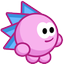
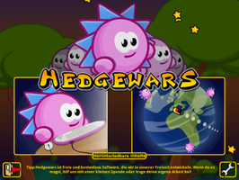
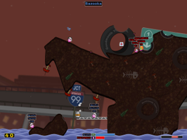
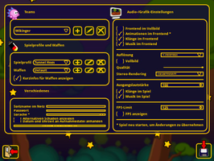
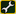
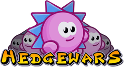

Hedgewars
Dieser Artikel wurde für die folgenden Ubuntu-Versionen getestet:
Ubuntu 14.04 Trusty Tahr
Zum Verständnis dieses Artikels sind folgende Seiten hilfreich:

Hedgewars  ist ein freier Klon von frühen Ausgaben der Computer- und Videospielreihe Worms. Hier bekriegen sich keine Würmer, sondern Igel. Ziel des Spiels ist es, alle Igel der gegnerischen Teams zu töten und dabei die eigenen Igel soweit es geht aus der Schusslinie zu halten. Dabei steht ein umfangreiches Waffenarsenal zur Verfügung, welches auch im laufendem Spiel noch weiter aufgestockt werden kann. Rundenbasiert ist es die Aufgabe des Spielers, durch den präzisen Einsatz der richtigen Waffen möglichst viele gegnerische Igel zu schädigen.
ist ein freier Klon von frühen Ausgaben der Computer- und Videospielreihe Worms. Hier bekriegen sich keine Würmer, sondern Igel. Ziel des Spiels ist es, alle Igel der gegnerischen Teams zu töten und dabei die eigenen Igel soweit es geht aus der Schusslinie zu halten. Dabei steht ein umfangreiches Waffenarsenal zur Verfügung, welches auch im laufendem Spiel noch weiter aufgestockt werden kann. Rundenbasiert ist es die Aufgabe des Spielers, durch den präzisen Einsatz der richtigen Waffen möglichst viele gegnerische Igel zu schädigen.
Die Kamera wird durch das Bewegen der Maus und die Igel über die Pfeiltasten gesteuert.
Ein weiterer freier Worms-Klon ist Wormux, dessen Entwicklung jedoch eingestellt wurde.
|  |  |
| Hauptmenü | Spielszene |
Installation¶
Zur Installation [1] ist folgendes Paket aus den Quellen notwendig:
hedgewars (universe)
 mit apturl
mit apturl
Paketliste zum Kopieren:
sudo apt-get install hedgewars
sudo aptitude install hedgewars
Nach erfolgreicher Installation kann man Hedgewars unter "Anwendungen -> Spiele -> Hedgewars" starten.
Spiel¶
Hedgewars stellt unterschiedliche Spielmodi zur Verfügung. So stehen "Lokales Spiel" und "Netzwerkspiel" zur Verfügung. Erstere benötigen keine stehende Internetverbindung. Es kann zwischen einem einfachen Spiel, einer zufällig generierten Karte mit 2 Teams, oder einer Mehrspielervariante gewählt werden. Der Trainingsmodus ermöglicht es dem Spieler, den Umgang mit den Waffen zu erlernen und schwierige Kletterübungen zu durchlaufen. Tutorials zur Verwendung der Waffen können auf hedgewars.org angeschaut werden.
Im Netzwerkspiel ist es möglich, mit mehreren Gegnern zu spielen. Es kann ein eigener Server via LAN oder Internet verwendet werden. Außerdem kann über den offiziellen Server mit Igeln aus der ganzen Welt gekämpft werden.
|  |
| Einstellungen |
Einstellungen¶
Das Einstellungsmenü erreicht man über die Schaltfläche . Hier können Teams zusammengestellt, Spiel- / Waffeneinstellungen verändert und Grafik- und Soundoptionen angepasst werden.
Erweiterungen¶
Karten, Hüte und andere Erweiterungen können im Hauptmenü über den Menüpunkt "Herunterladbare Inhalte" ausgewählt und heruntergeladen werden. Um die Daten zu entfernen, löscht man diese im Ordner ~/.hedgewars/.
Karten¶
Unter Unofficial Add-ons findet man Karten  . Diese herunterladen, entpacken [2] und nach ~/.hedgewars/Data/Maps ins Homeverzeichnis kopieren.
. Diese herunterladen, entpacken [2] und nach ~/.hedgewars/Data/Maps ins Homeverzeichnis kopieren.
Tastenkürzel¶
| Tastenkürzel | |
| Taste(n) | Beschreibung |
| ← + ↑ + → | Igel bewegen. |
| ⏎ | Hüpfen. |
| ⌫ / ⌫ + ⌫ | Vertikaler Sprung in Blickrichtung / entgegengesetzte Richtung. |
 | Anzeige des Waffenmenüs. Die Waffen können entweder über dieses Menü oder über die Tastatur ausgewählt werden. |
 | Waffenwahl. |
| F1 bis F10 | Schnellwahltasten der unterschiedlichen Waffengruppen. |
| ↑ + ↓ | Mit dem Fadenkreuz grob zielen. |
| ⇧ und ↑ + ↓ | Genaues Zielen. |
| Schuss. Je länger die Taste gedrückt wird, desto größer die Aufladung, Wirkung und Reichweite. | |
| P | Pause |
| Esc | Spiel beenden. |
| T | Chat |
| C | Bildschirmfoto aufnehmen. Dieses wird als .bmp-Datei im Ordner ~/.hedgewars/Screenshots abgespeichert. |
| F12 | Vollbild- / Fenstermodus |
| 9 + 0 | Lautstärke anpassen. |
Eine genaue Beschreibung ist dem Handbuch zu entnehmen.

Infobox¶
| Hedgewars | |
| Genre: | Action |
| Sprache: |  |
| Veröffentlichung: | 2011 |
| Entwickler: | Hedgewars Team |
| Systemvoraussetzungen: | - |
| Medien: | Download |
| Strichcode / EAN / GTIN: | - |
| Läuft mit: | nativ |

- Erstellt mit Inyoka
-
 2004 – 2017 ubuntuusers.de • Einige Rechte vorbehalten
2004 – 2017 ubuntuusers.de • Einige Rechte vorbehalten
Lizenz • Kontakt • Datenschutz • Impressum • Serverstatus -
Serverhousing gespendet von